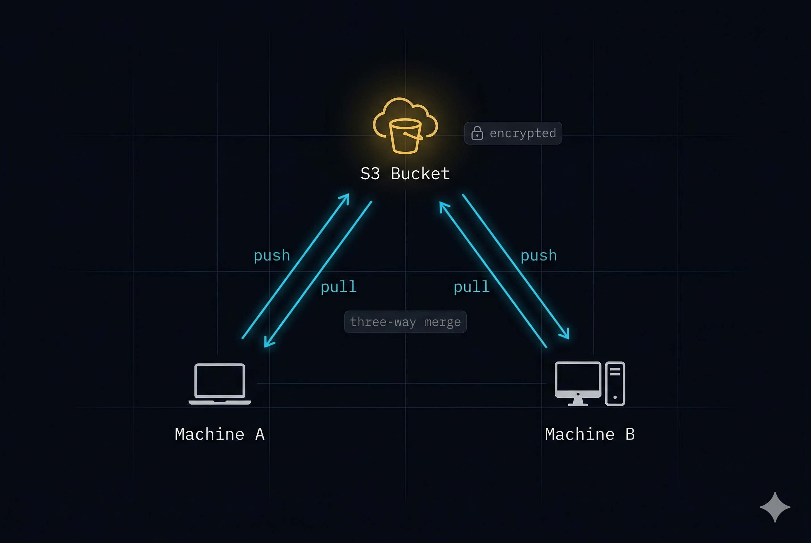

Persistent memory that follows your AI across sessions, instances, and machines.
Save anything with /rem or just tell your AI what to remember in plain language. Ask questions later and the right context surfaces automatically.
You never need to learn the underlying tools. Crafted skill files teach AI agents when to search, when to save, and how to route entries to the right file — so you just talk.
No database to migrate. No vendor to depend on. Delete the index and rebuild it in seconds.
Four architecture decisions that make it work — built on tools that already exist and already scale.
domain.topic.subtopic.md replaces folder hierarchy. The first segment is your project for natural filtering. Two to four segments: infra.postgres, security.threat-intel, project.architecture.decisions.
Ripgrep for exact and regex matches — the fastest grep on earth. BM25 via SQLite FTS5 for keyword ranking. Results are merged, deduplicated, and scored. Configurable weights, no custom search engine.
Entries are never mutated — only appended with epoch timestamps. The markdown files are the source of truth, not the index. Delete the SQLite database and rebuild it in seconds.
A 9-stage pipeline ranks every result: recency decay, staleness penalties, type and status boosts. Decisions and high-weight entries never go stale. The best match always surfaces first.
Most AI memory tools trade durability for convenience. HyperKB doesn't make you choose.
Your knowledge lives in infra.postgres.md, not a3f2b8c9.json. Open any file in any editor. Read it without the tool — today, five years from now. No database required to access your own data.
A 9-stage scoring pipeline with recency decay, staleness penalties, type boosts, and session anchoring. The best result surfaces first — not just the newest, not just a substring match.
Token-budgeted retrieval packs exactly what fits. Session briefings orient the agent on startup. Topic anchoring biases ongoing searches. Your AI gets signal, not noise.
SQLite is a rebuildable cache, not a prison. Delete it and rebuild in seconds. Sync across machines with git-backed three-way merge over S3. Your markdown files are always yours, always portable.
S3-compatible sync with git-backed three-way merge. Your knowledge base follows you across machines and AI sessions — encrypted credentials at rest, conflict resolution built in.

brew install ripgrep git clone https://github.com/calvincs/hyperkb ~/src/hyperkb python3 -m venv ~/.hkb/venv ~/.hkb/venv/bin/pip install -e "~/src/hyperkb[all]" export PATH="$HOME/.hkb/venv/bin:$PATH" # add to ~/.zshrc hkb init
sudo apt install ripgrep # or: dnf, cargo git clone https://github.com/calvincs/hyperkb ~/src/hyperkb python3 -m venv ~/.hkb/venv ~/.hkb/venv/bin/pip install -e "~/src/hyperkb[all]" export PATH="$HOME/.hkb/venv/bin:$PATH" # add to ~/.bashrc hkb init
// Add to ~/.claude/.mcp.json (or project .mcp.json) { "mcpServers": { "hyperkb": { "command": "~/.hkb/venv/bin/hkb-mcp" } } }
Restart Claude Code and approve the MCP server when prompted. The skill files teach your AI agent how to use the KB automatically.
For permissions, skill files, and OpenCode setup, see the full setup guide →
Plain markdown you can read without the tool — today, five years from now, always.